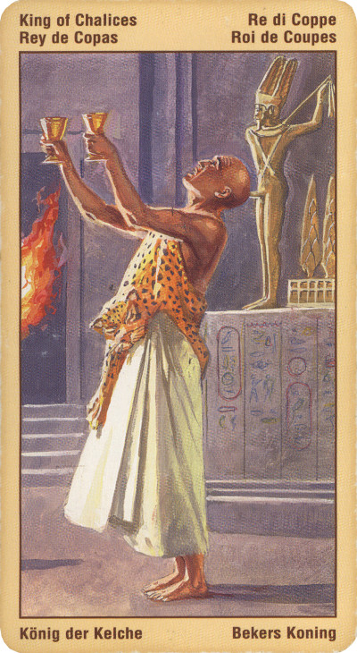

Король Кубков
Король Кубков - это человек, которому присуща мудрость, сочувствие и сострадание, а также характерная творческим людям восприимчивость и впечатлительность.
Значение: Часто это – художник, писатель, возможно, психотерапевт или оккультист, пользующийся известностью и уважением.
Эта карта может относиться к некоему проекту в духовной или культурной сфере, а также в области медицины. Это могут быть музыка и исполнительское искусство, издательское дело и выставки, усилия в творческой сфере и т. д.
Часто карта указывает на ученого.
Иногда этот человек может быть просто бизнесменом или человеком, чья деятельность так или иначе связана с законом (к примеру - адвокат). Не исключено, что это священнослужитель, философ; быть может, человек, достигший высоких ученых степеней. Быть может, его интересы в искусстве и науке пересекаются. Это благородный человек, вряд ли способный на низкие дела.
При гадании на какое-либо дело появление Короля Чаш - верный знак того, что вы не останетесь в одиночестве: в нужный момент вам всегда придут на помощь и дадут возможность реализовать ваши планы!
В перевернутом положении – приступ меланхолии, отчаяния.
Эта карта может символизировать растерянного и бестолкового партнера, неспособного быть лояльным в отношениях, или же человека, неспособного контролировать бурный поток своих эмоций. Она также может указывать на человека, который не смог воспользоваться своими созидательными способностями; его любовь и склонность к фантазиям вылилась в стремление уйти от действительности в мир иллюзий и грез, что в самых экстремальных случаях может привести к наркомании или алкоголизму.
Ярко выраженный артистизм, причем тяготеющий к эпатажу, эксцентрике. Возможно, этого человека повсюду сопровождают скандалы, а его неуемность и стремление жить на широкую ногу будут вести к потерям, бесчестью, к невыгодному для него положению. Может быть, этот человек нечист на руку; его левая рука не ведает, что творит правая. Его жизнь - путь саморазрушения. Оказавшись на его пути, вы будете также вовлечены в деструктивный процесс.
Иногда король кубков воплощает профессионала, виртуоза в своем деле, напрочь лишенного каких-либо моральных принципов. Дело с ним иметь бывает порой трудно, может так статься, что человек этот скользок как налим.
В отрицательном значении: Нечестный, вероломный мужчина. Хитрый, подлый, с негативным прошлым. Скандальный, мот, альфонс.